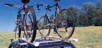
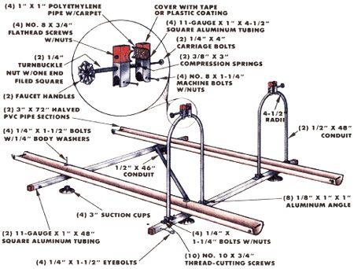

To the avid bicyclist, pedaling-to just about anywhere-is a way of life. But even those among us who may be on the verge of sprouting a crankset and wheels have an occasional yearning to strap the ol' velo to the family car and take off in search of some new cycling territory.
The most elegant and secure of the commercial bicycle racks are the rooftop models. Yet, considering their cost, they're not all that complicated. In fact, roof bike racks so closely resemble conventional drip-rail-mounted utility bars (equipped with a few accessories) that research staffer Dennis Burkholder decided to attempt his own low-budget rendition of the high-buck haulers, using readily available materials.
And as you can see in the accompanying photo, Dennis's efforts were successful both in form and in function. The carrier's main framing members are just two 4' lengths of 1" square aluminum tubing furnished with suction-cup feet and sturdy eyebolts. These bars are secured to the roof's drip rails with straps and gutter hooks (we were able to locate a ready-made kit at a discount auto supply store).
To cradle and support bike tires of whatever dimension, Dennis sliced a 6' piece of 3" Schedule 40 PVC pipe lengthwise and fastened each half to the top of the square framing bars. To allow room for two bikes to stand side by side (and to make the frame of a size to fit snug on nearly any auto top), he spaced the pipe sections 30" apart and centered the aluminum bars 37" from each other. A 46"-long conduit-run on the diagonal and screwed to the frame-keeps the assembly square.
The folding support struts consist of 1/2" X 48" lengths of conduit, each bent into an elongated U and attached to what will be the rear framing bar with 1/8" X 1" X 1" sections of aluminum angle. The down-tube clamps are made from 4-1/2" sections of 1" square aluminum tubing cut to match the contour of the tubes to which they're attached. Each of these clamps is also relieved to slip around the bicycle down tube, and a section of 1 " polyethylene pipe-with carpet glued inside-is screwed into this relief. A spring-loaded carriage bolt with an appropriate nut-Dennis attached a faucet handle to a filed-down turnbuckle nut-allows the clamp to be tightened around the bicycle's frame member.
Though the basic frame dimensions we've supplied should suit just about any vehicle, the positions of the suction cups and eyebolts should be adapted to your car. Locate the cups between 4" and 6" in from the edges of the roof, and place the eyebolts about an inch to the outside of them. Avoid having the cups too far in (which might cause the roof to bow) or too far out (which might cause the frame to rub the roof). And make sure the straps for the gutter hooks don't pull too close to straight-up-and-down.
Once the rack is hooked to the car roof support struts to the rear-securing the bicycles is a cinch: The wheels are laid in the plastic troughs (fronts facing rearward), and then the struts can be swung up so the padded clamps can hold each bike's down tube. With that done, each wheel is strapped in place, and your "ride" will be safely above street-level mishaps.
EDITOR'S NOTE: If you keep your car's roof highly polished, make sure the suction cups on the rack seat firmly against the roof (wet them before installing the rack). Otherwise, the assembly may slide backward.
|
 |
 |
|